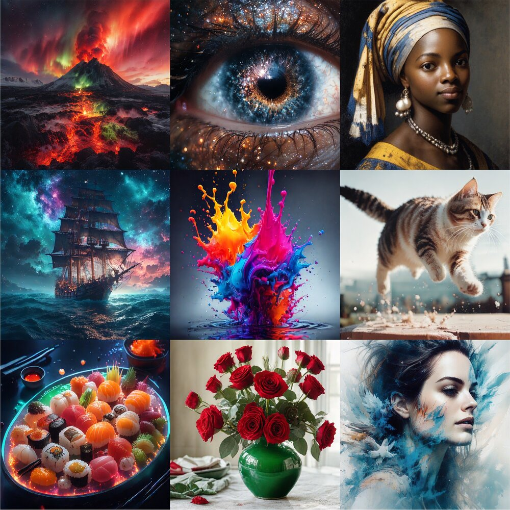

NeurIPS 2026
Diff-Instruct with Diffused Reward: Towards Principled One-step Generator RL
A data-free, trajectory-level RLHF objective for one-step text-to-image generators that shares the minimizer of clean-image KL-regularized RLHF.
Paper
Code
Model
Demo
@inproceedings{wu2026didr,
title = {Diff-Instruct with Diffused Reward: Towards Principled One-step Generator RL},
author = {Wu, Junyi and Luo, Weijian and Zheng, Haoyang and Zhang, Ruizhe and Lin, Guang},
booktitle = {Advances in Neural Information Processing Systems},
year = {2026},
eprint = {2605.24001},
archivePrefix = {arXiv}
}